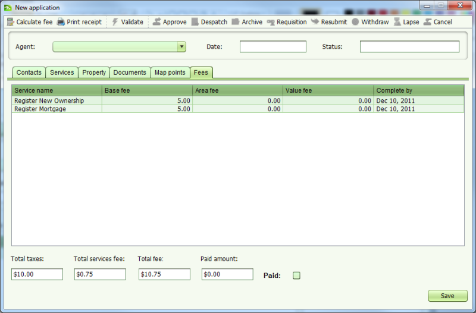

Pour calculer les frais d'une demande, cliquer sur l'onglet Frais dans l'écran de détails de la demande et cliquer sur le bouton Calculer les frais.

Utiliser l'outil de calcul des frais ne sauvegarde pas les changements effectué à la demande. Ceci permet de déterminer les frais qui s'appliquent à une nouvelle demande juste avant son dépôt. Le calcul des frais est également réalisé automatiquement quand la demande est déposée.
Voir aussi